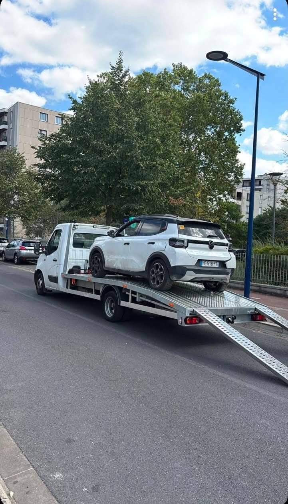

{{ v.title }}
{{ v.text }}
Voiture, moto, camion, utilitaire, engin de loisir. Panne, batterie, crevaison, accident ou véhicule immobilisé : nos camions plateau interviennent jour et nuit, à Paris et dans les 8 départements.

En intervention{{ v.text }}
{{ s.text }}
Nos vraies interventions, filmées par l'équipe : treuil, sangles à cliquet, cales de roue. Un véhicule chargé proprement, c'est un véhicule livré sans dégât.
Deux clics : type de véhicule, symptôme. Vous obtenez l'intervention adaptée, le délai estimé et la marche à suivre en attendant le camion. Gratuit, sans engagement.
Urgence sur voie rapide ou périphérique ? Gilet, triangle, puis appelez le 07 86 34 58 71.
1 · Votre véhicule
2 · Le symptôme
Intervention recommandée
{{ diag.text }}
Photos réelles de nos camions et de nos chantiers. Cliquez sur une photo pour l'agrandir en plein écran.
Vous avez d'autres photos d'intervention ? Envoyez-les à Yass@depanneur24.fr et elles s'ajoutent à cette galerie.
{{ p.text }}
★★★★★{{ r.text }}
{{ f.a }}
Un appel, une adresse, un véhicule. Nous vous confirmons le délai exact et un tarif annoncé à l'avance — 24h/24, 7j/7, jours fériés compris.
Dépanneurs agréés · Camions plateau & moto · Véhicules assurés pendant le transport